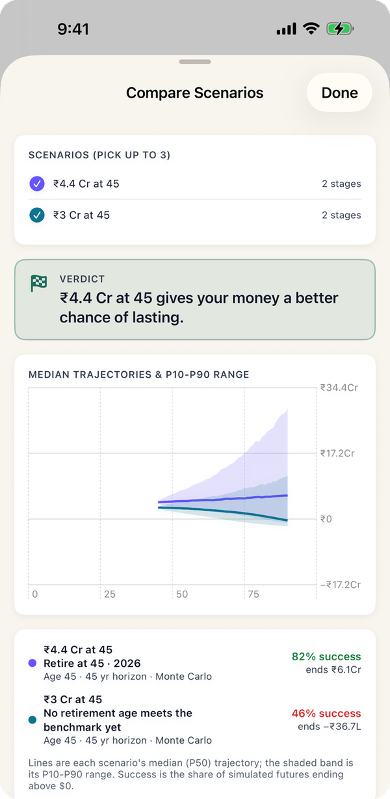
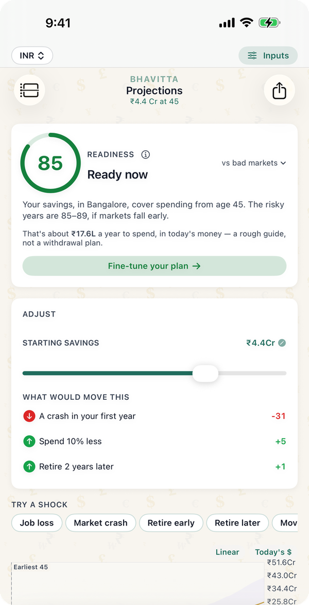

"Is ₹3 crore enough?" is one of the most common questions on Indian FIRE and personal-finance forums, and the replies usually split between "easily" and "not even close". Both can be right, because the answer turns on two things the question leaves out: how much you spend each month and how many years the money has to last. The tables below come from Bhavitta's own engine, the same one the app runs: 10,000 simulated market paths for each figure, in rupees, for a couple who stop working at 40, 45, 50 or 55 and need the money to last to 90.
What chance does ₹3 crore give you?
The share of 10,000 market paths in which ₹3 crore lasts to 90, by monthly spending and the age you stop working. Spending is in today's rupees and rises with inflation; health insurance is on top.
| Monthly spending | Stop at 40 | Stop at 45 | Stop at 50 | Stop at 55 |
|---|---|---|---|---|
| ₹75,000 | 66% | 72% | 78% | 83% |
| ₹1 lakh | 41% | 46% | 53% | 62% |
| ₹1.5 lakh | 10% | 12% | 15% | 20% |
| ₹2 lakh | 1% | 1% | 2% | 3% |
So ₹3 crore is enough for a couple spending up to about ₹75,000 a month from their mid-fifties. Stopping at 45 on ₹1 lakh a month is closer to a coin toss.

How much do you need for ₹1 lakh a month?
The smallest corpus, to the nearest ₹5 lakh, that lasts to 90 in at least 80% of paths:
| Monthly spending | Stop at 40 | Stop at 45 | Stop at 50 | Stop at 55 |
|---|---|---|---|---|
| ₹75,000 | ₹3.65 Cr | ₹3.40 Cr | ₹3.10 Cr | ₹2.85 Cr |
| ₹1 lakh | ₹4.70 Cr | ₹4.40 Cr | ₹4.05 Cr | ₹3.70 Cr |
| ₹1.5 lakh | ₹6.70 Cr | ₹6.40 Cr | ₹5.90 Cr | ₹5.40 Cr |
| ₹2 lakh | ₹8.80 Cr | ₹8.30 Cr | ₹7.75 Cr | ₹7.10 Cr |
A quick rule from this table: you need about 30 times your yearly spending if you stop at 55, 34 times at 50, 37 times at 45 and close to 40 times at 40. The "25 times expenses" rule, which is the US 4% rule in another form, falls short in every row.
What about ₹2, ₹4, ₹5 or ₹6 crore?
For a couple stopping work at 45, the chance of the money lasting to 90:
| Monthly spending | ₹2 Cr | ₹3 Cr | ₹4 Cr | ₹5 Cr | ₹6 Cr |
|---|---|---|---|---|---|
| ₹75,000 | 31% | 72% | 88% | 95% | 98% |
| ₹1 lakh | 10% | 46% | 73% | 87% | 94% |
| ₹1.5 lakh | 0% | 12% | 36% | 60% | 75% |
| ₹2 lakh | 0% | 1% | 13% | 31% | 51% |
The jump from ₹2 crore to ₹3 crore matters more than any later step: on ₹75,000 a month it takes the chance from 31% to 72%. Past about 35 times spending, each extra crore buys less. For smaller and larger amounts, see Is ₹1 crore enough? and Is ₹5 crore enough?

What the numbers assume
- A couple with no further income. The corpus is everything they hold the day they stop working: no salary, rent, pension or annuity after that.
- Monthly spending in today's rupees, rising with Bangalore's inflation of 5% a year (state CPI-Urban). Health insurance comes on top: ₹40,000 a year today, rising 10% a year.
- Returns from the app's Balanced India Monte Carlo preset: 9.5% a year on average, 13% volatility, all in rupees. 10,000 trials per figure.
- Survival means the balance stays above zero in every year to 90, not just at the end. 80% is the bar the app uses for "ready".
- EPF, PPF and NPS count inside the corpus. If part of it is locked until 58 or 60, the liquid part has to carry you until then.
- No tax in retirement. Add a tax rate to the retirement stage in the app if your withdrawals will be taxed.
What changes the answer most
- Spending, by far. Going from ₹1 lakh to ₹1.5 lakh a month adds about ₹2 crore to what you need, more than retiring ten years later saves.
- Owning your home. Rent is usually the biggest monthly line. A paid-off home can take ₹25,000–50,000 off the monthly figure, which at 45 is worth roughly ₹1–2 crore of corpus.
- A bad first few years. The app's "A crash in your first year" line shows how much an early downturn costs. It is the main reason the multiples here are higher than the 4% rule.
- Any income at all. A pension, rent or a few years of part-time work shortens the stretch the corpus has to cover alone.
- Where you live. The city sets both the cost and the inflation rate; the corpus-by-city guide gives the number for seven Indian cities, and Mumbai vs Pune follows one couple through the choice.
Common questions
Is ₹3 crore enough to retire at 45 in India?
For a couple spending ₹1 lakh a month, no: ₹3 crore lasts to 90 in 46% of 10,000 simulated market paths. On ₹75,000 a month it is 72%, just short of the 80% bar. To spend ₹1 lakh a month from 45 with an 80% chance you need about ₹4.4 crore.
Is ₹3 crore enough to retire at 55?
On ₹75,000 a month, yes: 83% of paths last to 90. On ₹1 lakh a month it is 62%, and you would need about ₹3.7 crore for an 80% chance.
How much monthly income can ₹3 crore give?
Roughly ₹75,000 a month in today's money, rising with inflation, for a couple from about 55 with an 80% chance of lasting to 90. Stopping earlier means less: ₹75,000 a month from 45 needs ₹3.4 crore.
Is ₹2 crore enough to retire in India?
Not for a couple spending ₹75,000 a month or more: ₹2 crore lasts to 90 in 31% of paths from 45 and 45% from 55. It can work with lower spending, a paid-off home, a pension, or a later start.
Is ₹5 crore enough to retire at 45?
For ₹1 lakh a month, yes: 87% of paths last to 90. For ₹1.5 lakh a month it is 60%; that lifestyle needs about ₹6.4 crore from 45.
How many times my annual expenses do I need to retire in India?
On these assumptions, about 30 times your yearly spending to stop at 55, 34 times at 50, 37 times at 45 and close to 40 times at 40, for an 80% chance of lasting to 90. That is a withdrawal rate of 2.5–3.3%, below the 4% often quoted.
Run your own number
- Set the currency to INR at the top of the app. New plans start with Indian defaults: resident cost of living, city inflation and the Balanced India return preset.
- On the Start tab, enter your age, savings, income and city. To use your own monthly figure, open the city stage on My Plan and type your yearly spending.
- Add Health insurance, EPF, PPF, NPS and any pension from "Add a life event".
- The Projections tab shows your chance of lasting to 90, the earliest age you could stop at 80%, and a savings slider to try ₹3 crore against your own spending.
Find your own number
Free on iPhone and Android. No account; your plan never leaves your phone.